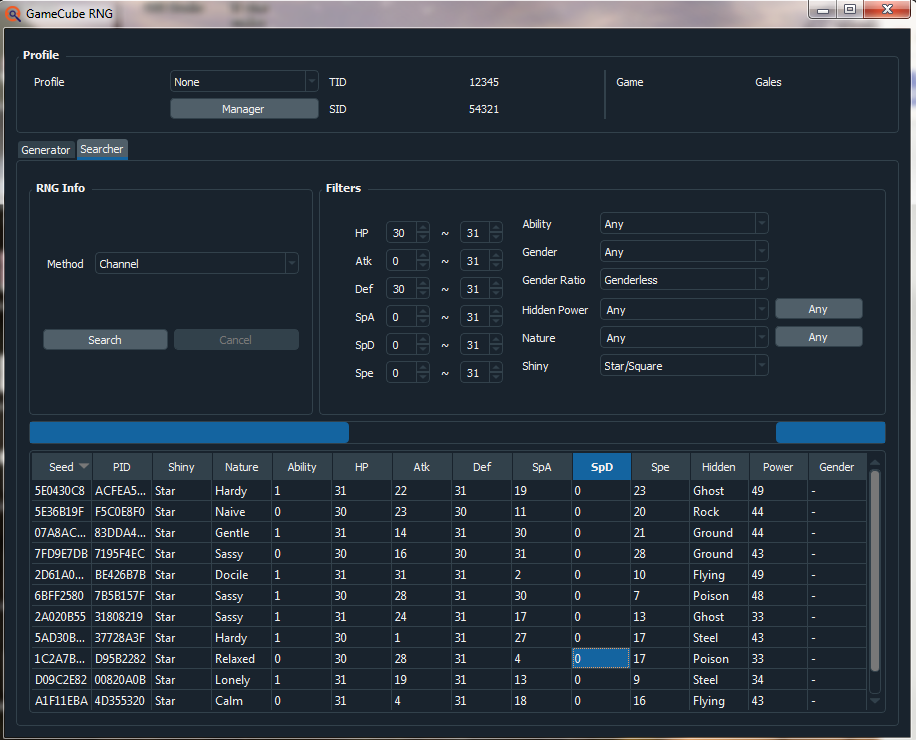
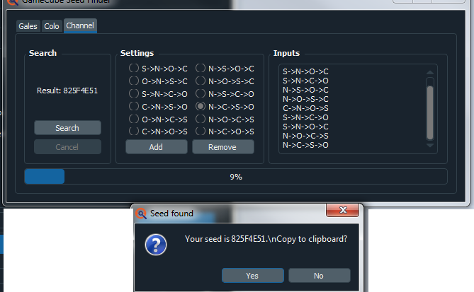
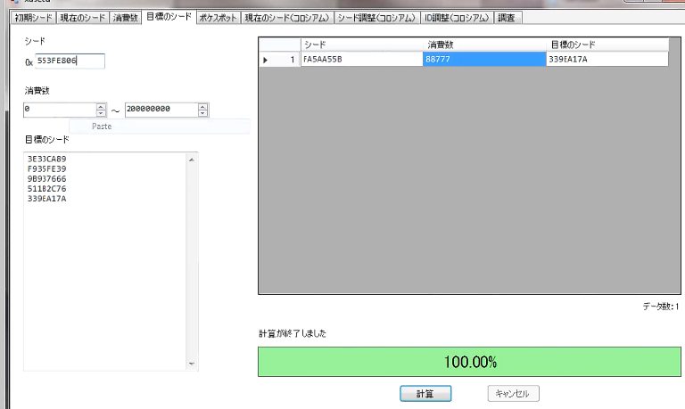
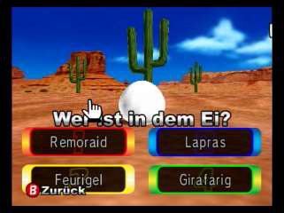
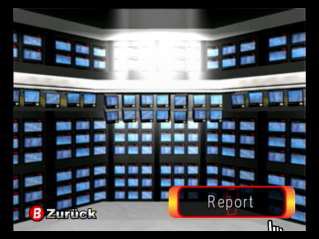
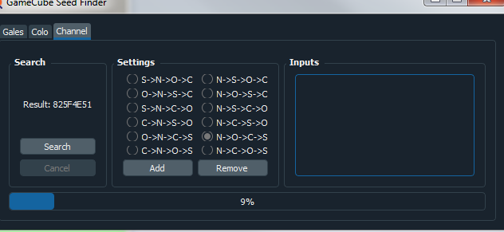
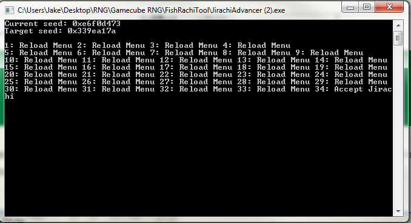

Channel Jirachi RNG
Video Guide
Text Guide
This guide will cover how to RNG Manipulate Jirachi received from the PAL copies of Pokemon Channel. This works for any language European copy, and the Australian copy. This is the best way to RNG Jirachi in gen 3 because of its ease and diversity. Unlike the U.S. Bonus disc, there are thousands of possible shiny spreads, and it does not require multiple frame perfect inputs.
Prerequisits
- Pokemon Ruby or Sapphire: The save file must have entered the hall of fame. It must also match the Language you have set Pokemon Channel to. IE, and English game can work with English channel. Region does not matter, US games work. Only region that does not work is Japanese.
- Pokemon Channel European Version: This is the only version that gives out a Jirachi.
- If in NTSC Region(USA,CA, Mexico, Japan): A way to play PAL games. Easiest way is hacked Wii or Freeloader GC Disc.
- GBA to GC Link cable: This is to connect the GBA so you may receive Jirachi.
- Pokefinder By Admiral Fish
- Jirachi Advancer by Admiral Fish
- XD Seed by Ginzaru
- A calculator and a timer. I usually use google timer or my phone.
Finding a Target.
We will search for your target Jirachi using Gamecube section on Pokefinder. Click the searcher tab, then for "Method" Choose Channel. In here you can specify the stats, nature, and shiny trait. I suggest searching for multiple targets at once! Once you find several candidates, right click and output to CSV so you can copy multiple seeds at once.
Finding Initial Seed
Load Pokemon Channel and select "Options" right away.
While there, in PokeFinder, open the gen 3 drop down, and select gamecube, then gamecube seed finder. In gamecube seed finder, chick the channel tab.
Then, go back to the main menu, watch the order the "New game/Options/Continue/Special" options appear, and select the order option that you see using the add button. Then, go back into "Options" In Pokemon Channel. Repeat this 10 times, then hit search. The remove Button will delete the current row of Title Pattern you input, just in-case you make a mistake. Once you finish your inputs, it will find a seed shortly.
Once you have found your initial seed, Copy it onto the clipboard by clicking yes, then open XDSEED. Go to the fourth tab from the left, and paste the Initial Seed into the top box. In frame range, the lower two boxes, set how many frames you're willing to wait. Most Jirachi frames are far away, so I reccomend a high range like 999999999. For example, around 10,000,000 frames is 24 hours(It may vary because of the inconsistent nature of frame advancement). In the Large bottom box, paste all the seeds you like that we found in PokeFinder. If a Jirachi is close enough for your liking, continue. If not, reset the gamecube or Wii and repeat the seed finding step until a Jirachi is on a closer frame.
Advancing to your Target
Once you find out how many frames away your target Jirachi is, we can advance towards it using several different methods.
Egg channel advances 112 frames per second in the Desert, and 103 per second in the Pond. Also, the frames advance very quickly while an egg is hatching, so please keep this in mind. On top of this, if an Egg hatches and you are not there, it may switch to a different channel, so pay attention to how long the egg has to hatch.
The report channel advances 52 frames per second. Best used for smaller distances, usually less than 100k. But it is also good for overnight uses if you do not have a long timer on your egg channel and you must rest.
The way to calculate how long you must wait is simple. Take the number of frames you must advance and divide by the number of frames per second advanced. Then, divide by 60. This will be how many minutes you must wait. I suggest a lot of leeway with this. Undershoot your target by several thousand frames.
Example: 4010626 is the amount of frames until Jirachi. -10,000 is 4000626. Divided by 112 for Desert Report channel is 35719.875. Divided by 60 is roughly 10 hours.
Once your advances are done, return to the main menu with the report channel. After this, go into "Options" again. Then, return to the Gamecube Seed finder in Pokefinder and repeat the same process as we did with finding our initial seed. You will have a new seed, much closer to your target.

Once this is done, paste your new current seed into XDSEED. If your frame is more than 5000 away, you must go back to using the report or egg channel for advances again. I suggest report since you are most likely closer now. Repeat this process until you are within 5000 frames of your target.
Jirachi Advancer
Once within 5000 frames, open Jirachi Advancer type your current seed first, and then your target seed in the lower box. It will then print out a list of actions you must take to get to your Target seed.
All of these are preformed from the Options menu
TITLE: Return to title screen->Go into "Options"
Reject Jirachi: Select "Jirachi", but say no to receiving it. Then go back into "Options".
Special: Return to title screen-> Select "Special" -> Hit start immediatly, then "End". Return to "Options".
Receive Jirachi: Receive a Jirachi.
Notes and Conclusion
I think the most important takeaway is that when you do the inconsistent advancements you should always undershoot your target frame by a signifigant advantage. Also, unfortunately some Jirachis will not be reachable and you'll get close to your target and will be told "Target Jirachi is not reachable" by Jirachi Advancer. If this is the case, you did nothing wrong but got unlucky.
Let me know if you have any questions, cheers. Enjoy the Jirachi.
Thank you for reading, I hope you succeed in getting your Jirachi. If you have any questions feel free to ask me on Twitter @im_a_blisy or join my discord. https://discord.gg/QchhXQv